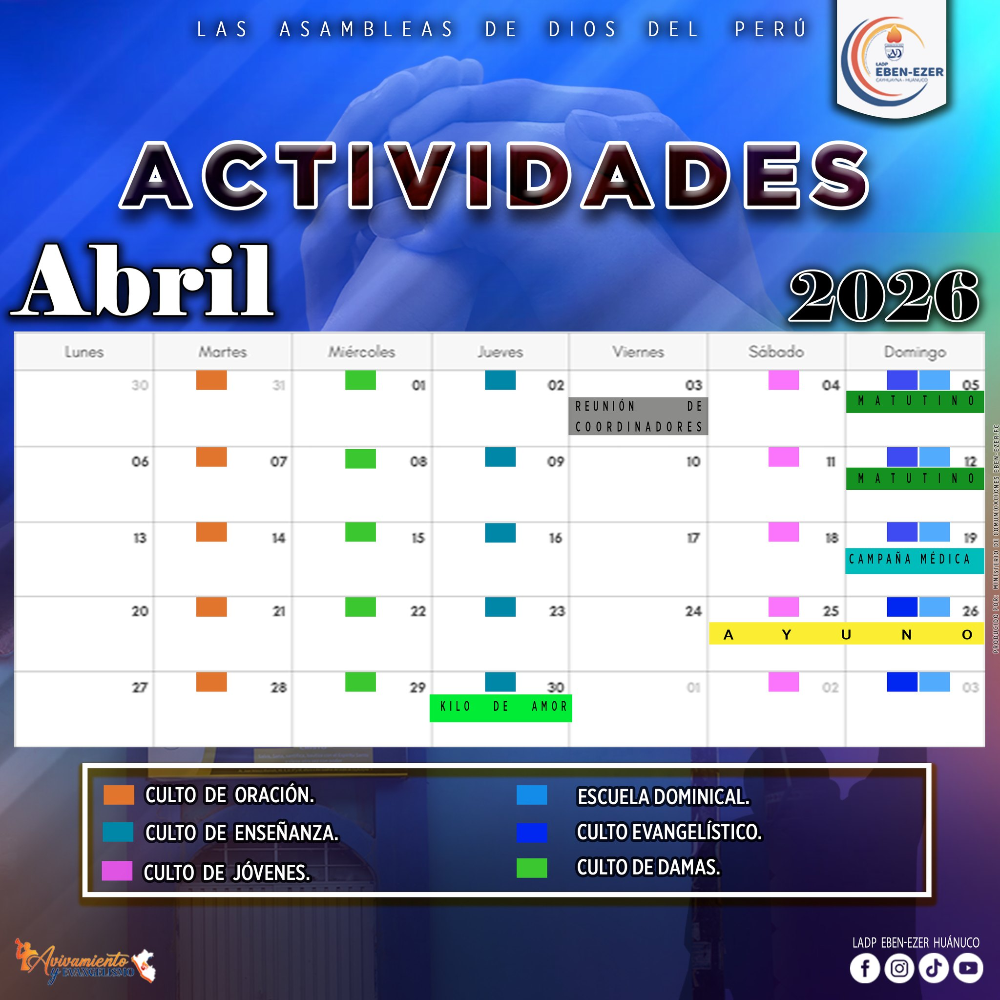

Ministerio de Jóvenes
Espacio para formar y acompañar a los jóvenes en su crecimiento espiritual y servicio.

Conoce nuestras áreas de trabajo y servicio ministerial
Conoce las áreas de servicio de nuestra iglesia. Haz clic en cada ministerio o dirección para ver su información completa: líderes, fotos, videos y actividades.

Espacio para formar y acompañar a los jóvenes en su crecimiento espiritual y servicio.
Área dedicada a la enseñanza bíblica, dinámicas y acompañamiento de la niñez.
Acompañamiento a matrimonios, padres e hijos con orientación y actividades de integración.
Equipo enfocado en compartir el evangelio y organizar campañas de alcance.
Gestiona la imagen, difusión de actividades y producción de contenido digital.
Coordinación de obra misionera, anexos y apoyo a nuevas comunidades.